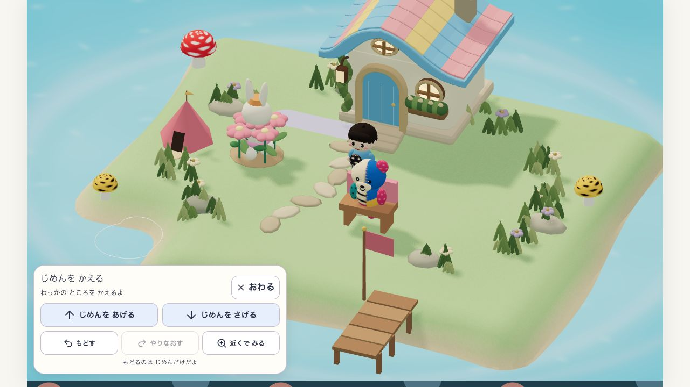
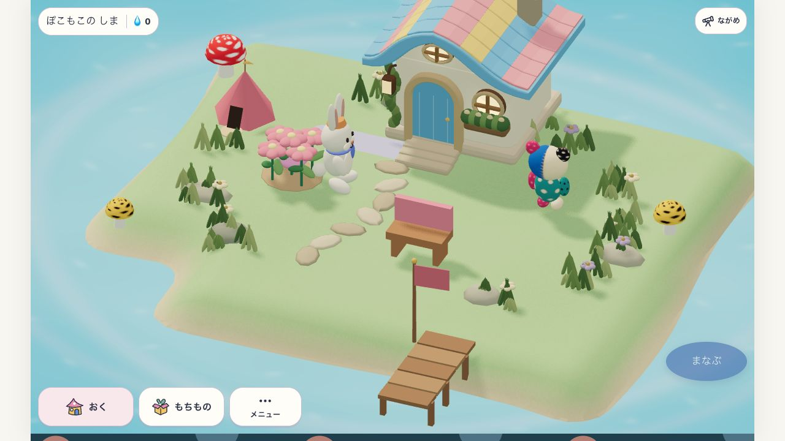
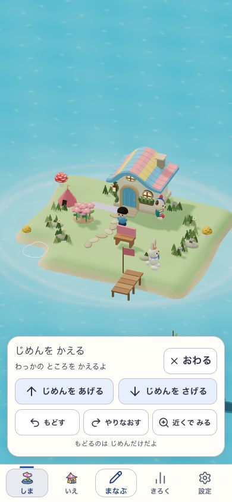
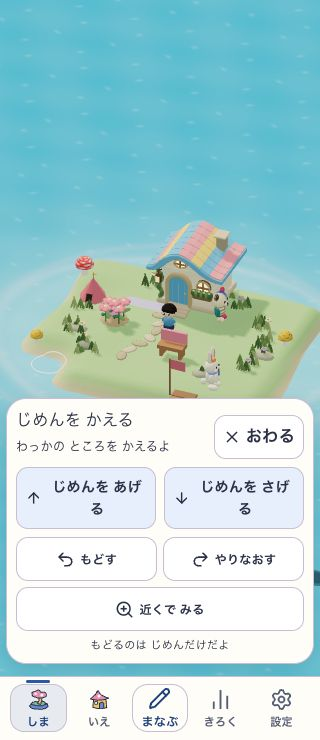
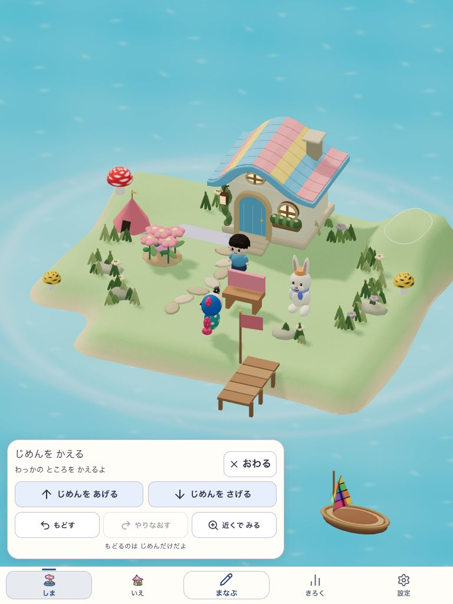
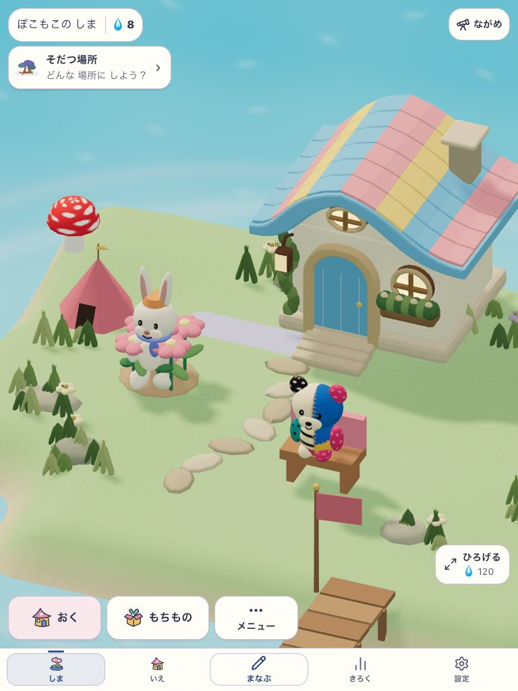
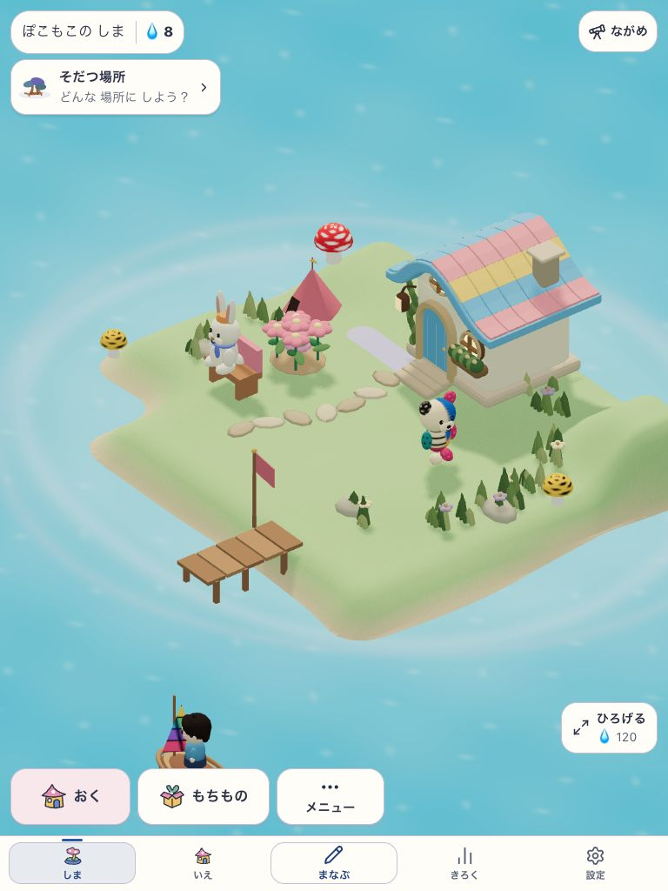
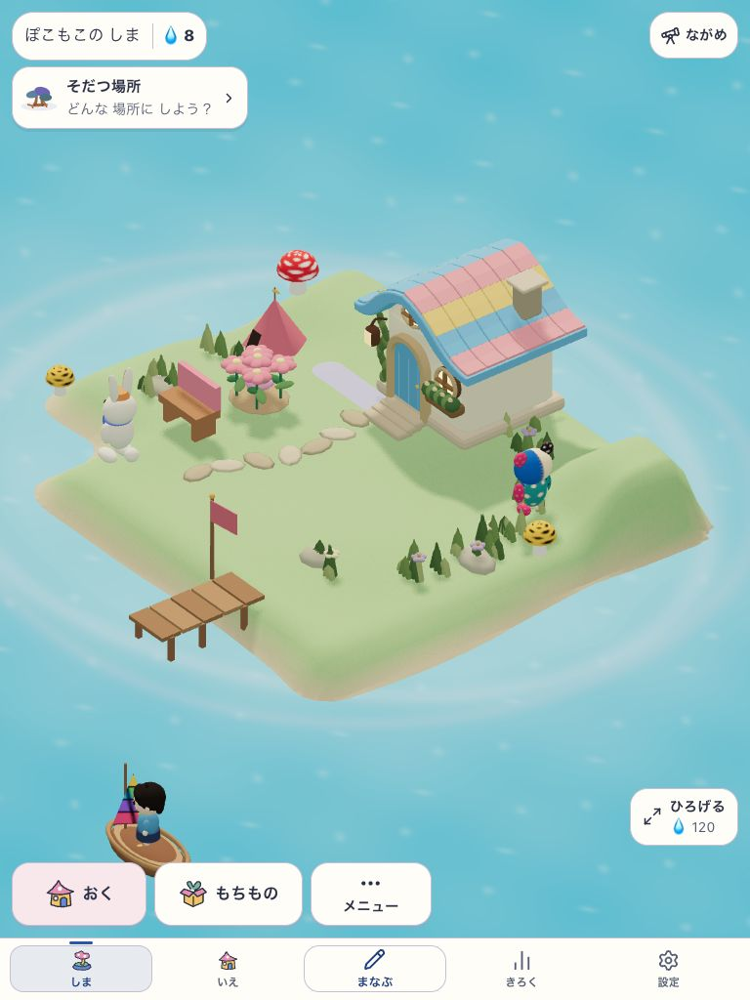
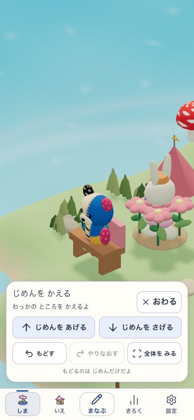
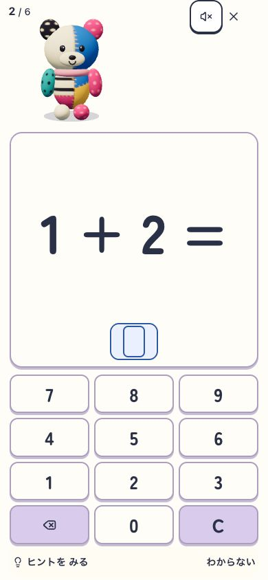

自分で岸を掘り、家を移し、学習して、保存した島へ戻る一往復を記録しています。01〜06は初回旅程、07は経路修正版、08〜10は最終版です。同じ保存を更新して検査しました。各版の入力SHAと未確認範囲はREADMEと検証記録に残します。

01 岸を掘る
通常の家と入居を済ませた同じ島。3回下げて水辺にする。

02 家を移す
入居済みのテントを別の場所へ。重なる草だけを除き、入口を保つ。

03 水面から戻せる
自分の取得地は水になっても再び盛れる。

04 小さい画面
全ボタン44px以上、横のはみ出しなし。

05 通信なしで盛土
配信サーバー停止中に東側を3段盛り、同じ保存へ書き込む。

06 再開と生活
再起動後も地形と家を保持。実際に学習し、住人の生活が続く。

07 移した場所で暮らす
経路修正版。自然に歩いたうさこが、岸へ移したベンチを使う。

08 回しても岸が収まる
最終版。実際の地面を基準に全景を収め、水面下の土台は画角計算から除く。

09 近づいて編集する
最終版。地形編集から近景/全体を切り替え、同じ島を操作する。

10 保存した続きを遊ぶ
最終版の配信を止めて再読込。地形と所有を保ち、学習も同じ予約2/6から再開。